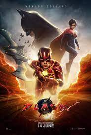

RESUMEN
- Titulo: Oppenheimer
- Rating: 4,25 estrellas
- Estreno: 20 de julio de 2023
- Duracion: 3 horas
- Sinopsis: El físico J Robert Oppenheimer trabaja con un equipo de científicos durante el Proyecto Manhattan, que condujo al desarrollo de la bomba atómica.
- Genero: Drama/Suspenso
AGREGAR A FAVORITOS

RESUMEN
- Titulo: Megalodon 2: El gran abismo
- Rating: 3,2 estrellas
- Estreno: 3 de agosto de 2023
- Duracion: 1h 56m
- Sinopsis: Jonas Taylor lidera un equipo de investigación en las profundidades del océano. Acorralados por colosales tiburones prehistóricos y despiadados bandidos, los científicos intentan sobrevivir a toda costa.
- Genero: Accion/Aventura
AGREGAR A FAVORITOS

RESUMEN
- Titulo: Tortugas Ninjas: Caos mutante
- Rating: 3,7 estrellas
- Estreno: 17 de agosto de 2023
- Duracion: 1h 37m
- Sinopsis: Tras años de estar alejados del mundo humano, los hermanos tortugas se esfuerzan por conquistar a los neoyorquinos y ser aceptados como adolescentes normales a través de actos heroicos. Su nueva amiga, April O’Neil, los ayuda a luchar contra un misterioso sindicato criminal pero pronto serán sorprendidos por un ejército de mutantes que va tras ellos.
- Genero: Comedia/Aventura
AGREGAR A FAVORITOS

RESUMEN
- Titulo: Barbie
- Rating: 4 estrellas
- Estreno: 20 de julio de 2023
- Duracion: 1h 54m
- Sinopsis: Después de ser expulsada de Barbieland por no ser una muñeca de aspecto perfecto, Barbie parte hacia el mundo humano para encontrar la verdadera felicidad.
- Genero: Comedia/Fantasia
AGREGAR A FAVORITOS

RESUMEN
- Titulo: The Flash
- Rating: 3,6 estrellas
- Estreno: 15 de junio de 2023
- Duracion: 2h 24m
- Sinopsis: Flash viaja a través del tiempo para evitar el asesinato de su madre, pero sin saberlo provoca cambios que resultan en la creación de un multiverso.
- Genero: Accion/Fantasia
AGREGAR A FAVORITOS

RESUMEN
- Titulo: Gran Turismo
- Rating: 3,9 estrellas
- Estreno: 24 de agosto de 2023
- Duracion: 2h 15m
- Sinopsis: El joven Jann Mardenborough gana una serie de competiciones de videojuegos Gran Turismo organizadas por una importante empresa automovilística y obtiene la oportunidad de convertirse en piloto de carreras profesional.
- Genero: Accion
AGREGAR A FAVORITOS

RESUMEN
- Titulo: Hazme el favor
- Rating: 3,9 estrellas
- Estreno: 23 de junio de 2023
- Duracion: 1h 43m
- Sinopsis: Maddie, una mujer de 32 años en bancarrota, acepta la propuesta de los padres del joven Percy, quienes le ofrecen un coche de lujo a cambio de fingir atracción por su hijo y así aumente su autoestima antes de que vaya a la universidad.
- Genero: Comedia
AGREGAR A FAVORITOS

RESUMEN
- Titulo: Cars
- Rating: 4,5 estrellas
- Estreno: 29 de junio de 2006
- Duracion: 1h 57m
- Sinopsis: De camino al prestigiado campeonato Copa Pistón, un automóvil de carreras que sólo se preocupa por ganar aprende sobre lo que realmente es importante en la vida de varios vehículos que viven en un pueblo a lo largo de la histórica Ruta 66.
- Genero: Aventura
AGREGAR A FAVORITOS

RESUMEN
- Titulo: Toy story 4
- Rating: 4,1 estrellas
- Estreno: 21 de junio de 2019
- Duracion: 1h 40m
- Sinopsis: Woody siempre ha tenido claro cuál es su labor en el mundo y cuál es su prioridad: cuidar a su dueño, ya sea Andy o Bonnie. Sin embargo, Woody descubrirá lo grande que puede ser el mundo para un juguete cuando Forky se convierta en su nuevo compañero de habitación. Los juguetes se embarcarán en una aventura de la que no se olvidarán jamás.
- Genero: Aventura
AGREGAR A FAVORITOS